Realm-Modus Leitfaden fuer Hero Wars Alliance
- Autor: Alexandre Domingos. .
Der Realm-Modus in Hero Wars Alliance hat alles veraendert. Wenn du nicht weisst, wie du dein Koenigreich richtig aufbaust, werden deine Helden im Hauptspiel zurueckfallen – und du wirst zusehen, wie deine Konkurrenten staerker werden, waehrend du stecken bleibst. Das Realm ist nicht mehr nur eine Nebenfunktion; es ist das neue Fundament der Staerke in HWA. Ob du in der Arena aufsteigst oder Gildenkriege dominierst – was du im Realm tust, wirkt sich direkt auf jeden einzelnen Helden in deinem Kader aus.
In diesem umfassenden Leitfaden zeige ich dir, wie du den Gegenwert von 717.000 Smaragden an Ressourcen verdienen kannst, einfach indem du den neuen Realm-Modus spielst. Ich werde dir auch verraten, wie du den maaechtigen Leonel freischaltest, welche Skills du priorisieren solltest, damit du keine wertvollen Ressourcen verschwendest, und die goldenen Tipps, die deinen Helden ueber 100.000 Bonus-HP fuer Kriege und Arena-Kaempfe geben. Wenn du in Hero Wars Alliance vorne bleiben willst, lies diesen Leitfaden bis zum Ende!
Schau dir unten das vollständige Video über das Reich an: Das geheime Macht-System, das niemand in Hero Wars Alliance erklärt. Die technische Zusammenfassung und die Attributtabellen befinden sich direkt nach dem Video.
YouTube-Video von Alexandre Games
▶️ Alles über das neue Realm-Update

▶ Synchronisiert auf YouTube ansehen
📋 Inhaltsverzeichnis
- Realm-Basis-Update: Bereite deine Verteidigung vor und schütze deine Ressourcen
- Was würde ich als F2P-Spieler zuerst verbessern?
- Forts und Throne Rush: Kurzübersicht
- Fehler #1: Zufaellige Gebaeude Aufwerten
- Warum das Forschungszentrum ein Game-Changer ist
- Heldenhalle - So baust du dein Realm
- Leonel Freischalten
- Fehler #2: Realm-Skills Verschwenden
- Das 717K Smaragde Realm-Event
- Goldene Tipps & Beschleunigungs-Warnung
- Wie du ein Realm-Team fuer RAID und Monsterkaempfe waehlst
- Den Kanal Unterstuetzen
- Abschliessende Gedanken
Realm-Basis-Update: Bereite deine Verteidigung vor und schütze deine Ressourcen
Die offizielle Ankündigung zum Realm-Basis-Update nennt den 27. Oktober als Veröffentlichungstermin für alle Spieler. Das Update bringt neue Gebäude und direkten Zugang zu anderen Spielmodi von der Basis aus. Angriffe auf Spielerbasen und das Plündern von Ressourcen werden darin als künftige Funktionen beschrieben; neue Gebäude bedeuten allein noch nicht, dass diese Kämpfe begonnen haben.
Mauer: Wähle Helden nach ihren Realm-Fähigkeiten
An der Mauer kannst du eine Verteidigungsgarnison aus Helden und Truppen aufstellen. Meine Tests zeigen: Die stärksten Helden im normalen PvP sind nicht automatisch die besten Realm-Verteidiger. Auch Realm-Fähigkeiten, Truppenboni und das Zusammenspiel des Teams zählen. Einfach die fünf Helden mit der höchsten Stärke auszuwählen, kann eine schwächere Verteidigung ergeben als erwartet.
Halte auch Teams zum Sammeln, für Monster und Gildenaktivitäten bereit. Ohne echte Basisangriffe zu testen, würde ich keine feste Maueraufstellung empfehlen. Sobald diese Kämpfe verfügbar sind, möchte ich Kombinationen testen und meine Ergebnisse teilen.
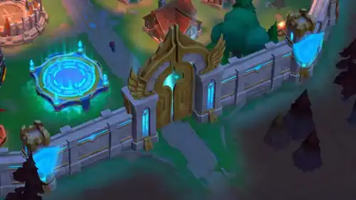
Lager: Eine Priorität für F2P-Spieler
Lager-Upgrades erhöhen die Ressourcenmenge, die vor künftigen Angriffen geschützt ist. Für F2P-Spieler und Spieler mit kleinem Budget gehört das zu meinen Prioritäten: Selbst eine gut vorbereitete Verteidigung kann einem deutlich stärkeren Angreifer unterliegen. Nahrung, Holz, Stein und Eisen zu schützen, die du tagelang gesammelt hast, kann wichtiger sein als jeder einzelne Sieg. Mauer und Lager ergänzen sich beim Schutz deiner Basis.
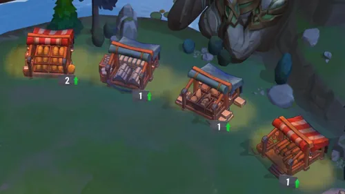
Übungsplätze: Verwalte und vergrößere deine Armee
Übungsplätze zeigen eingesetzte Truppen und Reserven. Zusätzliche Gebäude erhöhen die Kapazität: Der zweite wird auf Stufe 16 der Heldenhalle freigeschaltet, der dritte auf Stufe 22 nach einer besonderen Forschung. Die Entwickler nennen eine Erweiterung um 30.000 Truppen. Mehr Kapazität hilft, doch Truppenstufen, Militärforschung und Heldenboni bestimmen weiterhin die Kampfkraft.
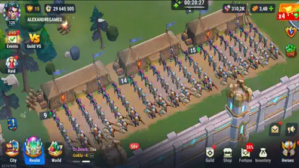
Zusätzliche Lazarette: Platz für verwundete Truppen
Besondere Forschungen schalten zusätzliche Lazarette und mehr Platz für verwundete Truppen frei. Vernachlässige diese Kapazität nicht, wenn deine Armee wächst: Fehlt Platz für Verwundete, drohen dauerhafte Verluste. Ich empfehle, die Heilungskapazität zusammen mit Truppenausbildung und Militärforschung auszubauen.
Was würde ich als F2P-Spieler zuerst verbessern?
Für ein wachsendes Konto bleibt das Forschungszentrum auf Stufe 9 der Heldenhalle ein wichtiger Meilenstein. Passe danach deine Ausgaben an dein Konto an, statt alles gleichzeitig auszubauen. Zur Vorbereitung auf künftige Basisangriffe empfehle ich:
- Achte besonders auf die Lager, um angesammelte Ressourcen zu schützen.
- Entwickle Heldenhalle, Kasernen und Militärforschung weiter, damit neben der Kapazität auch die Truppenqualität steigt.
- Erweitere die Lazarette, um mehr verwundete Truppen aufzunehmen.
- Baue zusätzliche Übungsplätze aus, sobald sie verfügbar sind, und bilde weiterhin stärkere Truppen aus.
- Plane die Mauer anhand von Realm-Fähigkeiten und Truppenboni und halte andere Teams für tägliche Aktivitäten bereit.
Optionaler Kauf: Ein zweites Forschungszentrum
Ein zweites Forschungszentrum ist nach Erreichen von Stufe 13 der Heldenhalle über ein besonderes Kaufangebot erhältlich. Damit kannst du zwei Forschungen gleichzeitig durchführen. Es ist kostenpflichtig; prüfe daher das Angebot auf deinem Konto, bevor du damit planst. Wenn du es kaufst, empfehle ich die Webversion und die Hub-Belohnungen. Mit dem Creator-Code ALEXANDREGAMES kannst du meine Arbeit ohne zusätzliche Kosten unterstützen.
Forts und Throne Rush: Kurzübersicht
In Throne Rush kämpfen Gilden um Forts. Solange eine Gilde ein Fort hält, erhalten alle aktuellen Mitglieder dessen Bonus. Für Eroberungen brauchst du das freigeschaltete Realm, eine Heldenhalle auf Stufe 7 oder höher und eine Gilde. Fort-Belagerungen und die angekündigten Angriffe auf einzelne Spielerbasen sind verschiedene Aktivitäten.
- Erklären und vorbereiten: Der Gildenmeister oder ein General erklärt den Krieg. Darauf folgen 30 Minuten Vorbereitung und eine einstündige Kampfphase.
- Erobern: Besiegt die Garnisonstrupps und alle Wächter. Kämpfen mehrere berechtigte Gilden um das Fort, entscheiden die Eroberungspunkte.
- Bonus behalten: Besetzt das eroberte Fort mit einer Garnison und koordiniert die Verteidigung.
Mein Tipp: Prüft Entfernung, feindliche Verstärkungen und den Fort-Bonus, bevor ihr eure Gilde in den Kampf schickt. Mein vollständiger Fort-Guide zu Throne Rush, Eroberungsregeln, Belohnungen und Belagerungsstrategie erklärt Voraussetzungen, Fort-Stufen und die Lehren aus meinen Early-Access-Kämpfen.
Fehler #1: Zufaellige Gebaeude Aufwerten – Konzentriere dich auf Heldenhalle Stufe 9
Der erste grosse Fehler, den die meisten Spieler machen, ist das zufaellige Aufwerten von Gebaeuden ohne klaren Plan. Deine absolute Prioritaet sollte es sein, Stufe 9 der Heldenhalle zu erreichen. Warum? Weil du dort das Forschungszentrum freischaltest – das wichtigste Gebaeude im gesamten Realm-Modus.
Im Forschungszentrum verbesserst du Technologien, die echte Statistiken fuer ALLE deine Hero Wars Alliance Helden freischalten – nicht nur im Realm, sondern auch in der Arena, Gildenkriegen, der Kampagne und ueberall sonst. Es gibt 3 Technologiebaeume zu erkunden:
- 🌱 Wachstumsbaum: Verbessert die Werte ALLER deiner Helden im Hauptspiel – HP, Angriff, Ruestung und andere wichtige Koenigsreich-Verbesserungen.
- 💰 Wirtschaftsbaum: Erhoeht die Eisen- und Nahrungsproduktion – beginne hier, um Ressourcenengpaesse zu vermeiden.
- ⚔️ Kampfbaum: Verbessert die Werte von Truppen und Helden fuer die Kampfeffektivitaet und die Leistung der Armee in Realm-Schlachten.
Profi-Tipp: Beginne mit dem Wirtschaftsbaum, um deinen Ressourcenfluss aufrechtzuerhalten, und konzentriere dich dann voll auf den Kampfbaum fuer die spielveraendernden Stat-Boosts, die deine Helden in allen Spielmodi deutlich staerker machen.
Warum das Forschungszentrum ein Game-Changer ist
Das Forschungszentrum veraendert das Spiel komplett, weil du dort Technologien verbessern kannst, die allen deinen Helden in Hero Wars Alliance echte und greifbare Vorteile geben. Wenn du dich auf die richtigen Technologiebaeume konzentrierst, kannst du die Werte aller deiner Helden deutlich steigern, deine Ressourcenproduktion verbessern und deine gesamte Kampfeffektivitaet erhoehen. Dadurch wird das Forschungszentrum zum wichtigsten Gebaeude im gesamten Realm-Modus.

▶ Synchronisiert auf YouTube ansehen
Aktuelle Heldenboni durch Technologien des Forschungszentrums Nummer 1
| Technologie | Aktueller Bonus |
|---|---|
| Gesundheit |
 +105,000
+105,000
|
| Physischer Angriff |
 +6,900
+6,900
|
| Magischer Angriff |
 +9,750
+9,750
|
| Ruestung |
 +5,039.7 (15%)
+5,039.7 (15%)
|
| Magische Verteidigung |
 +2,559.45 (15%)
+2,559.45 (15%)
|
| Ausweichen |
 +0 (15%)
+0 (15%)
|
| Kritische Trefferchance |
 +0 (15%)
+0 (15%)
|
| Magische kritische Trefferchance |
 +0 (15%)
+0 (15%)
|
Heldenhalle - So baust du dein Realm fuer maximale Macht auf
Die Heldenhalle ist das zentrale Herzstueck deines Realms und die Grundlage fuer deinen gesamten Fortschritt in Hero Wars Alliance. Jedes Upgrade, das du hier machst, verbessert deine Helden, Gebaeude und die Ressourcenproduktion. Wenn du dein Realm effizient aufbaust, kommst du schneller voran und behaeltst eine starke Wirtschaft.
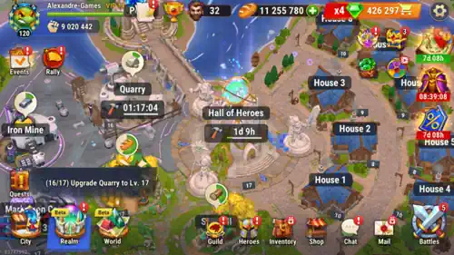
Kosten und Anforderungen fuer Heldenhalle-Upgrades
Jede Stufe der Heldenhalle verlangt bestimmte Gebaeude, Ressourcen und Zeit fuer das Upgrade. Die Tabelle unten zeigt die Anforderungen, die Bauzeit und die erhaltene Macht fuer jede Stufe.
| Stufe | Benoetigt |

Beschleunigung |
Nahrung |
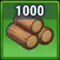 Holz |
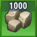 Stein |
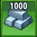 Eisen |
Zeit | Macht |
|---|---|---|---|---|---|---|---|---|
| 2 | - | 1 | - | 180 | - | - | 2s | 500 |
| 3 | 1 Haus L2 | 7 | 805 | 805 | - | - | 1m | 550 |
| 4 | Steinbruch L3 2 Haeuser L3 | 19 | 1800 | 1800 | 360 | - | 3m | 600 |
| 5 | 3 Haeuser L3 Muehle L4 Steinbruch L4 Portal L1 | 63 | 7600 | 7600 | 1500 | - | 10m | 650 |
| 6 | Eisenmine L5 | 187 | 19000 | 19000 | 3800 | - | 30m | 700 |
| 7 | Muehle L6 | 411 | 69000 | 69000 | 13000 | 3400 | 60m | 750 |
| 8 | Infanterielager L7 | 991 | 120000 | 120000 | 25000 | 6300 | 2h30m | 800 |
| 9 | Saegewerk L8 | 1700 | 260000 | 260000 | 52000 | 13000 | 4h30m | 850 |
| 10 | Schuetzenlager L9 | 2200 | 460000 | 460000 | 92000 | 23000 | 6h | 900 |
| 11 | Speertraegerlager L10 | 2800 | 1300000 | 1300000 | 260000 | 65000 | 7h30m | 950 |
| 12 | Forschungszentrum L11 | 4900 | 1600000 | 1600000 | 330000 | 84000 | 8h45m | 1000 |
| 13 | Infanterielager L12 | 4800 | 2300000 | 2300000 | 470000 | 110000 | 10h45m | 1050 |
| 14 | Schuetzenlager L13 | 5200 | 3100000 | 3100000 | 630000 | 150000 | 13h10m | 1100 |
| 15 | Speertraegerlager L14 | 6400 | 4600000 | 4600000 | 930000 | 230000 | 17h | 1150 |
| 16 | Forschungszentrum L15 | 10500 | 5900000 | 5900000 | 1100000 | 290000 | 1d5h | 1200 |
| 17 | Infanterielager L16 | 12400 | 9300000 | 9300000 | 1800000 | 460000 | 1d9h | 1250 |
| 18 | Schuetzenlager L17 | 14600 | 12000000 | 12000000 | 2500000 | 620000 | 1d19h | 1300 |
| 19 | Speertraegerlager L18 | 22000 | 15000000 | 15000000 | 3100000 | 780000 | 2d10h | 1350 |
| 20 | Forschungszentrum L19 | 27500 | 21000000 | 21000000 | 4300000 | 1000000 | 3d1h | 1400 |
| 21 | Infanterielager L20 | 35100 | 27000000 | 27000000 | 5400000 | 1300000 | 4d | 1450 |
| 22 | Schuetzenlager L21 | 53600 | 36000000 | 36000000 | 7200000 | 1800000 | 5d20h | 1500 |
| 23 | Speertraegerlager L22 | 70600 | 44000000 | 44000000 | 89000000 | 2800000 | 7d21h | 1550 |
| 24 | Forschungszentrum L23 | 98900 | 60000000 | 60000000 | 12000000 | 3000000 | 11d1h | 1600 |
| 25 | Infanterielager L24 | 138400 | 81000000 | 81000000 | 16000000 | 4000000 | 15d11h | 1650 |
Um die Macht deines Realms zu maximieren, solltest du folgende Gebaeude in dieser Reihenfolge priorisieren:
- Heldenhalle: Das Hauptgebaeude deines Realms. Ein Upgrade schaltet neue Gebaeude, zusaetzliche Funktionen frei und steigert deinen gesamten Fortschritt.
- Forschungszentrum: Eines der wichtigsten Gebaeude im Realm. Forschung verbessert deine Helden und Gebaeude in mehreren Spielmodi, nicht nur innerhalb des Realms. Sobald deine Heldenhalle Stufe 9 erreicht, wird das Forschungszentrum zur absoluten Prioritaet.
- Trainingsgelaende: Erhoeht die maximale Stufe deiner Helden und Truppen, sodass sie staerker werden und deine Kampfeffizienz steigt.
- Ressourcengebaeude (Bauernhoefe, Minen und Saegewerke): Diese Gebaeude erzeugen die essenziellen Ressourcen fuer Upgrades und Forschung. Wenn du sie aktuell haeltst, sicherst du dir einen stabilen Ressourcenfluss.
Ressourcengebaeude mit Elarit optimieren
Zusaezlich zu den normalen Upgrades mit Basisressourcen besitzt jedes Ressourcengebaeude spezielle Moebel-Upgrades, die Elarit benoetigen. Diese Upgrades erhoehen die Produktionsleistung deiner Gebaeude erheblich.
Auch wenn diese Moebel-Upgrades nicht noetig sind, um das Gebaeude selbst aufzuleveln, sind die Produktionsboni extrem wertvoll. Hier Elarit zu investieren, ist eine der effizientesten Methoden, um dein langfristiges Ressourceneinkommen zu steigern.
Die wichtigsten Gebaeude, die von Elarit-Upgrades profitieren, sind:
- Muehle
- Saegewerk
- Steinbruch
- Eisenmine
Ressourcen von der Weltkarte holen
Eine weitere wichtige Moeglichkeit, Ressourcen zu sammeln, besteht darin, deine Helden und Truppen direkt auf die Weltkarte zum Abbau zu schicken. Ressourcenknoten erscheinen in der Naehe deines Realms und koennen durch ausgesandte Maersche eingesammelt werden.
Es gibt sechs Stufen von Ressourcenknoten, und hoeherwertige Knoten enthalten deutlich groessere Mengen an Ressourcen. Wie viel deine Truppen tragen koennen und wie schnell sie sammeln, haengt von deiner Gesamtmacht und den freigeschalteten Forschungstechnologien ab.
Das Abernten von Knoten hoher Stufen kann mehr als 8 Stunden dauern. Damit ist es die perfekte Aktivitaet, waehrend du offline bist, schlaefst oder arbeitest.
Ressourcenknoten und ihre Werte
| Knotentyp | L1 | L2 | L3 | L4 | L5 | L6 |
|---|---|---|---|---|---|---|
| Verlassene Muehle | 70,000 | 150,000 | 300,000 | 600,000 | 1.2M | 3M |
| Verlassenes Saegewerk | 70,000 | 150,000 | 300,000 | 600,000 | 1.2M | 3M |
| Verlassener Steinbruch | 14,000 | 30,000 | 60,000 | 120,000 | 240,000 | 600,000 |
| Verlassene Eisenmine | 3,500 | 7,500 | 15,000 | 30,000 | 60,000 | 150,000 |
Wenn du effiziente Gebaeude-Upgrades, kluge Elarit-Investitionen und regelmaessiges Farmen auf der Weltkarte kombinierst, kannst du eine starke Wirtschaftsmaschine fuer dein Realm aufbauen und deinen gesamten Fortschritt in Hero Wars Alliance beschleunigen.
Leonel Freischalten – Der Realm-Exklusive Held
Viele Leute fragen mich: „Alexandre, lohnt sich der Realm-Modus?" Wenn du Stufe 80 oder hoeher bist, lautet die Antwort ein eindeutiges JA! Eine der groessten Belohnungen ist der Zugang zu Leonel, einem fantastischen Helden, der exklusiv fuer den Realm-Modus ist.
Und hier kommt das Beste: Leonel hat eine unglaubliche Synergie mit Oya und Yasmine. Er ist das fehlende Puzzlestueck – der perfekte Partner – auf den dein physisches Schadens- und kritisches Treffer-Team gewartet hat, um in der Arena wirklich zu glaenzen. Leonel ist ein enormer strategischer Vorteil fuer dein Deck, also ignoriere ihn nicht!
👉 Schau dir unseren vollstaendigen Leonel-Leitfaden an:
Weltkarten-Monster - Der Schluessel zum Freischalten von Leonel
Um Leonel freizuschalten, musst du bestimmte Monster auf der Weltkarte im Realm-Modus besiegen. Diese Monster werden von maechtigen Daemonen bewacht, und sie zu besiegen ist entscheidend, um im Realm voranzukommen und Leonel freizuschalten. Konzentriere dich darauf, eine starke Angriffsformation mit Helden aufzubauen, die gute Realm-Skills haben, um diese Monster effizient zu besiegen. Denk daran: Die Belohnungen dieser Monster sind fuer deinen gesamten Fortschritt im Realm sehr wichtig, also priorisiere sie, um Leonel so schnell wie moeglich freizuschalten!
Helden mit Realm-Skills sind sehr nuetzlich, damit deine Truppen diese Monster besiegen koennen, weil sie Verstaerkungen und besondere Realm-Skills bieten, die die Staerke und Ueberlebensfaehigkeit deiner Truppen verbessern. Denk daran, dass Helden ohne Realm-Skill besser zum Sammeln von Ressourcen auf der Weltkarte eingesetzt werden sollten, statt Monster anzugreifen. So bleibt deine Angriffsformation stark und fokussiert auf die haerteren Monster, die Leonels Freischaltung bewachen.
| Monster-Level |

Leonel-Seelen |
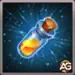 Kleinere XP-Traenke |
EXP |
Nahrung |
Holz |
Stein |
Eisen |
Energiebedarf |
|---|---|---|---|---|---|---|---|---|
| L1 | - | 4 | 6 | 4000 | 4000 | 800 | 200 | 10 |
| L2 | - | 4 | 6 | 6000 | 6000 | 1200 | 300 | 10 |
| L3 | - | 4 | 6 | 8000 | 8000 | 1600 | 400 | 10 |
| L4 | - | 5 | 6 | 10000 | 10000 | 2000 | 500 | 10 |
| L5 | - | 5 | 6 | 14000 | 14000 | 2800 | 700 | 10 |
| L6 | - | 5 | 6 | 18000 | 18000 | 3600 | 900 | 10 |
| L7 | - | 6 | 6 | 22000 | 22000 | 4400 | 1100 | 10 |
| L8 | - | 6 | 6 | 26000 | 26000 | 5200 | 1300 | 10 |
| L9 | - | 6 | 6 | 30000 | 30000 | 6000 | 1500 | 10 |
| L10 | 5 | 7 | 6 | 34000 | 34000 | 6800 | 1700 | 10 |
| L11 | 5 | 7 | 6 | 38000 | 38000 | 7600 | 1900 | 10 |
| L12 | 5 | 7 | 6 | 41500 | 41500 | 8300 | 2100 | 10 |
| L13 | 5 | 8 | 6 | 45000 | 45000 | 9000 | 2300 | 10 |
| L14 | 5 | 8 | 6 | 48500 | 48500 | 9700 | 2400 | 10 |
| L15 | 5 | 9 | 6 | 56000 | 56000 | 11200 | 2800 | 10 |
| L16 | 5 | 9 | 6 | 56000 | 56000 | 11200 | 2800 | 10 |
| L17 | 5 | 10 | 6 | 62500 | 62500 | 12500 | 3100 | 10 |
| L18 | 5 | 12 | 6 | 66500 | 66500 | 13300 | 3400 | 10 |
| L19 | 5 | 14 | 6 | 70500 | 70500 | 14100 | 3500 | 10 |
| L20 | 5 | 16 | 6 | 74500 | 74500 | 14900 | 3700 | 10 |
| L21 | 5 | 18 | 6 | 78500 | 78500 | 15700 | 4000 | 10 |
| L22 | 5 | 20 | 6 | 82500 | 82500 | 16500 | 4200 | 10 |
| L23 | 5 | 22 | 6 | 90000 | 90000 | 18000 | 4500 | 10 |
| L24 | 5 | 24 | 6 | 94500 | 94500 | 18900 | 4800 | 10 |
| L25 | 5 | 26 | 6 | 106000 | 106000 | 21200 | 5300 | 10 |
Fehler #2: Ressourcen fuer Falsche Realm-Skills Verschwenden
Hier ist ein entscheidendes Detail, das viele Spieler uebersehen: Im Realm erhalten deine Charaktere 2 Exklusive Skills speziell fuer Bau-Schlachten. Du musst diese Skills leveln, um die staerkeren Daemonen auf der Weltkarte zu besiegen. Der fatale Fehler? Zufaellige Skills bei zufaelligen Helden leveln ohne Plan. Da Ressourcen extrem knapp sind, musst du genau wissen, welche du priorisieren sollst.
🎯 Hier ist die smarte Strategie fuer Realm-Skills:
- Um Realm-Skills zu leveln, musst du Lager auf der Weltkarte besiegen. Je mehr Lager du raeumst, desto mehr Truhen erhaeltst du mit zufaelligen Realm-Skillpunkten.
- Konzentriere dich darauf, zuerst eine vollstaendige Formation aufzubauen: Priorisiere 1 Bogenschuetze, 1 Lanzentraeger und 1 Infanterist.
- Teile deine Helden in Angriffstruppen und Sammeltruppen auf.
- Angriffstruppen → Priorisiere das Leveln ihrer Realm-Skills zuerst, damit sie staerkere Monster besiegen koennen.
- Sammeltruppen → Wenn ein Charakter keine Realm-Skills hat, setze ihn zum Sammeln von Holz, Nahrung und Eisen auf der Weltkarte ein.
- Versuche, deine staerkste Angriffsformation zuerst zu vervollstaendigen, um hoehere Lager anzugreifen und bessere Belohnungen zu erhalten!
📝 Ich werde die vollstaendige Realm-Skill-Prioritaetsliste auf dem Alexandre Games Blog aktualisieren, damit du keine einzige Ressource verschwendest. Leonels Skill-Prioritaet ist bereits veroeffentlicht!
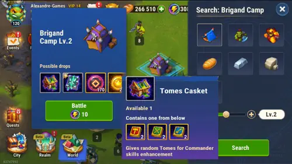
Das 717K Smaragde Realm-Event – Deine Groesste Chance
Es laeuft gerade ein episches Event im Realm! Laut Daten, die auf dem Hero Wars Hub veroeffentlicht wurden, entspricht der Gesamtwert aller Preise, die du durch das Abschliessen der Event-Missionen verdienst – einschliesslich Smaragde, Runen, Reliquien, Talismane und mehr – dem Gegenwert von 717.000 Smaragden!
Das ist kein Tippfehler – 717K Smaragde Gegenwert nur durchs Spielen des Realm-Modus und das Abschliessen seiner Missionen! Das umfasst die Smaragde, die du direkt erhaeltst, plus den Wert aller Runen, Reliquien, Talismane und anderen Belohnungen, umgerechnet in ihren Smaragd-Shoppreis.
⚠️ Aber hier ist mein goldener Tipp: Gib deine Smaragde NICHT aus, um Bauvorhaben zu beschleunigen oder Realm-Upgrades zu pushen. Das Spiel gibt dir diese Ressourcen bereits kostenlos! Spare deine Smaragde fuer wirkungsvollere Events, wie die Outland-Truhen-Events mit Rabatten – diese geben dir Skin-Steine und Skins, die auf lange Sicht viel wertvoller sind.
🏆 Goldene Tipps: Beschleunigungs-Warnung & Ressourcen-Management
🔴 KRITISCHER TIPP – Beende die Letzte Minute Nicht Automatisch!
Wenn du Bauvorhaben im Realm beschleunigst, lass es niemals auf Automatik fuer die letzte Minute. Der finale Countdown wird in kleine Fragmente zerlegt, und du verlierst wertvolle Sekunden, die sich mit der Zeit summieren. Diese verschwendeten Minuten werden dich spaeter verfolgen, wenn du dringend Beschleunigungen fuer wichtige Upgrades brauchst. Verwalte deine Beschleunigungen immer manuell und stoppe vor der letzten Minute, damit der Timer natuerlich ablaeuft.
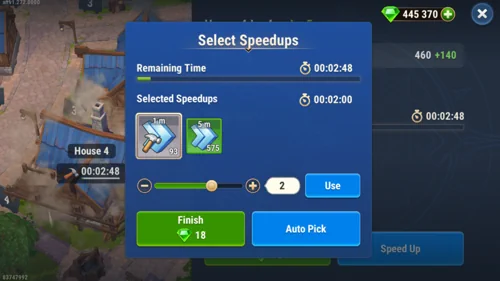
⚔️ RAID: So aktivierst du Auto Join fuer Raid-Boss-Kaempfe
Wenn du Ressourcen sammeln willst, waehrend du AFK bist, kannst du die Option Auto Join in deinen Rally-Einstellungen aktivieren. Mit dieser Funktion nehmen deine Helden automatisch an Rallys teil, die von deinen Gildenmitgliedern gestartet werden.
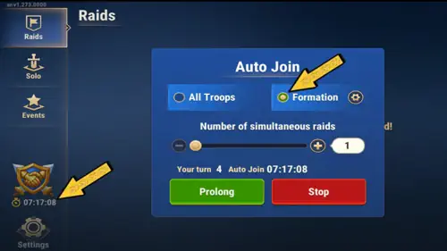
Nachdem du deine Auto-Join-Formation ausgewaehlt hast, druecke einfach X, um den Auto-Join-Bildschirm zu schliessen. Deine Helden nehmen dann automatisch bis zu 8 Stunden lang an Rallys gegen Raid-Bosse teil, die von deinen Gildenmitgliedern gestartet werden.
Das ist eine grossartige Moeglichkeit, deiner Gilde zu helfen und Belohnungen zu verdienen, selbst wenn du offline bist. Achte nur darauf, dass deine Formation starke Helden mit guten Realm-Skills enthaelt, damit deine Truppen in diesen Raids besser abschneiden.
Wenn ein Raid-Boss erscheint, tritt dein Team automatisch der Rally bei. Pruefe deine Formation regelmaessig, damit sie immer die besten verfügbaren Helden fuer die Unterstuetzung deiner Truppen enthaelt.
⚔️Wie du das beste Realm-Team fuer Raid- und Monsterkaempfe waehlst
Wenn du deine Formation fuer Realm-Kaempfe vorbereitest, ist es wichtig, Helden mit starken Realm-Skills zu waehlen. Auch wenn die Gesamtmacht deiner Helden hilft, wird das Endergebnis des Kampfes hauptsaechlich durch die Staerke deiner Truppen bestimmt.
Im Realm dienen Helden vor allem als Unterstuetzung fuer deine Truppen. Ihre Faehigkeiten koennen starke Verstaerkungen geben, die Angriff, Verteidigung und Ueberlebensfaehigkeit deiner Truppen erhoehen. Deshalb koennen Helden mit starken Realm-Skills die Effektivitaet deiner Armee enorm verbessern.
Einige Helden koennen sehr hohen Schaden verursachen, etwa solche, die oft in Hydra-Kaempfen verwendet werden. Wenn sie jedoch keine Realm-Skills besitzen, ist ihr Einfluss in Realm-Kaempfen deutlich geringer. Ohne die richtige Unterstuetzung fuer deine Truppen koennen Helden allein gegen staerkere Gegner normalerweise nicht gewinnen.
Bevor du einen Kampf startest, solltest du unbedingt deine Truppenauswahl und ihre Stufen ueberpruefen. Staerkere Truppen erhoehen die Kampfkraft deiner Armee erheblich, und ihr Level hat oft einen groesseren Einfluss auf den Kampf als die individuelle Staerke deiner Helden.
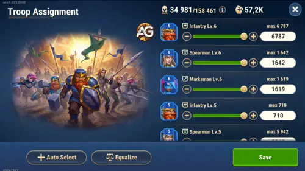
Bevor du Auto Join aktivierst oder einen Kampf beginnst, solltest du im Bereich Formation ein starkes Team festlegen. Teams mit guter Ueberlebensfaehigkeit und konstantem Schaden schneiden in den meisten Realm-Aktivitaeten besser ab, einschliesslich Raids und Monsterkaempfen. Helden, die Schilde, Heilung oder Schadensreduktion bieten, helfen deinen Truppen laenger zu ueberleben und erhoehen deine Siegchancen.
🚀 Unterstuetze den Kanal mit dem Creator-Code
Wenn dir meine Inhalte gefallen – Videos und Blog-Artikel – kannst du mich unterstuetzen, ohne zusaetzliche Kosten fuer dich! Wenn du im Hero Wars Alliance Hub Store (Web-Shop) einkaufst, verwende einfach den Code unten. Das ist Teil des Nexters Creator-Programms, und es hilft mir, weiterhin solche Inhalte zu erstellen!
👉 Verwende den Code: ALEXANDREGAMES
🛒 Hier Klicken um den Shop zu Oeffnen
(Du zahlst nichts extra, und es hilft dem Kanal enorm! Danke! 🙏)
Abschliessende Gedanken – Das Realm Ist Nicht Mehr Optional
Der Realm-Modus ist nicht mehr optional – er ist der neue Weg, um in Hero Wars Alliance staerker zu werden. Alles, was du dort tust, beeinflusst direkt die Staerke deines Hauptspiels. Hier eine Zusammenfassung der wichtigsten Punkte:
- 🏰 Bringe die Heldenhalle schnell auf Stufe 9, um das Forschungszentrum freizuschalten.
- Bereite dich auf künftige Basisangriffe vor: Schütze Ressourcen in Lagern, prüfe die Realm-Fähigkeiten an der Mauer und erweitere Truppen- und Lazarettkapazitäten.
- Koordiniere Fort-Kämpfe mit deiner Gilde: Nutze den vollständigen Throne-Rush-Guide.
- 🧬 Priorisiere Wirtschaft → Kampf-Technologiebaeume fuer Werte, die auf alle deine Helden wirken.
- 🦁 Schalte Leonel frei und kombiniere ihn mit Oya und Yasmine fuer ein verheerendes physisches/kritisches Team.
- ⚔️ Sei strategisch mit Realm-Skills – trenne Angriffstruppen von Sammeltruppen.
- 💎 Verschwende keine Smaragde fuer Realm-Beschleunigungen – spare sie fuer Outland-Truhen-Events.
- ⏱️ Verwalte Beschleunigungen manuell – beende niemals die letzte Minute automatisch!
Behalte den Alexandre Games Blog im Auge fuer die aktualisierte Realm-Skills-Prioritaetsliste und weitere Leitfaeden. Wenn dir dieser Leitfaden geholfen hat, hinterlasse einen Kommentar unten: Auf welcher Stufe ist deine Heldenhalle gerade? 💬
Videovorschlag

Hinterlasse Deine Meinung!
Hat dir unser Realm-Modus Leitfaden fuer Hero Wars Alliance gefallen? Gibt es etwas, das du nicht verstanden hast, oder moechtest du Aenderungen vorschlagen? Wir laden dich ein, an unserer Kommentarsektion auf der Alexandre Games Blog-Seite teilzunehmen. Teile gerne deine Meinung, klaere deine Fragen und teile deine Vorschlaege.
Klicke auf den Button unten, um zu starten: